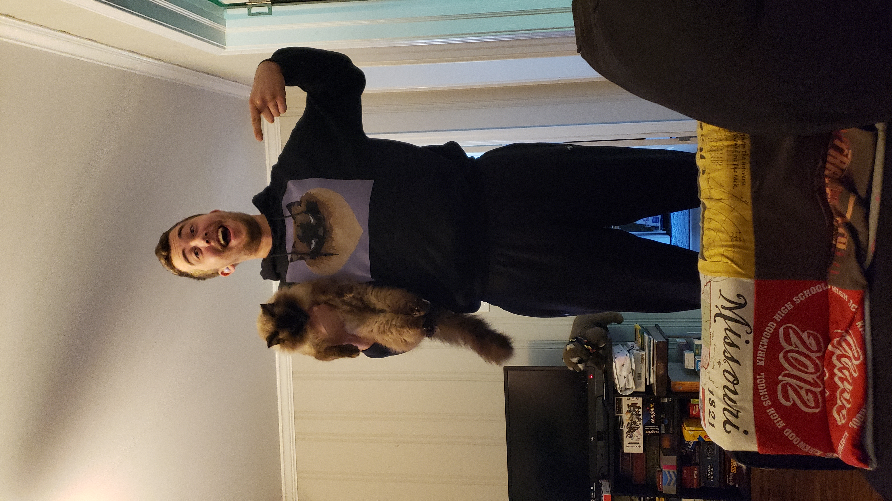

Experience:
-
-
Publix Supermarkets
Richmond, Virginia
-
Grocery Manager
- August 2022-Present
-
Trained, led and motivated a staff of 20+ associates
ranging from Stock Clerks to Assistant Department
Managers. Oversaw weekly schedules, daily assignment
plans, adjusted to constantly shifting priorities.
Grocery Manager
- August 2022-Present
-
Trained, led and motivated a staff of 20+ associates
ranging from Stock Clerks to Assistant Department
Managers. Oversaw weekly schedules, daily assignment
plans, adjusted to constantly shifting priorities.
Assistant Grocery Manager
- November 2020-August 2022
-
Supervised up to 20 associates and coached two team
leads to oversee superior service quality, manage
inventory, delegate daily tasks and build displays.
Grocery Team Leader
- February 2019-November 2020
-
Facilitated proper opening and closing standards:
conducted security and food safety walks, analyzed the
store for opportunities and delegated tasks to ensure
completion by a strict deadline
Wine Specialist
- September 2017-February 2019
-
Maintained inventory by conducting daily counts and
ordering based on projected business levels
-
Seabrook Island Club
Seabrook Island, South Carolina
-
Food & Beverage Supervisor
- May 2015-September 2017
-
Created weekly schedules for over 50 employees to
effectively staff a fine dining restaurant, a fast
casual restaurant and 3 satellite restaurants.
Food & Beverage Management Intern
- May 2014-August 2014
-
Managed a staff of 16-20 employees at a high-volume
restaurant that produced 400-600 covers per day
-
D2 Dining Facility
Blacksburg, VA
-
Student Manager
- November, 2014-May 2015
-
Oversaw hiring, training and scheduling of over 100
student employees.
Student Assistant Manager
- October 2013-November 2014
-
Trained and managed 8-12 employees within the shop
This is me and some things I love
